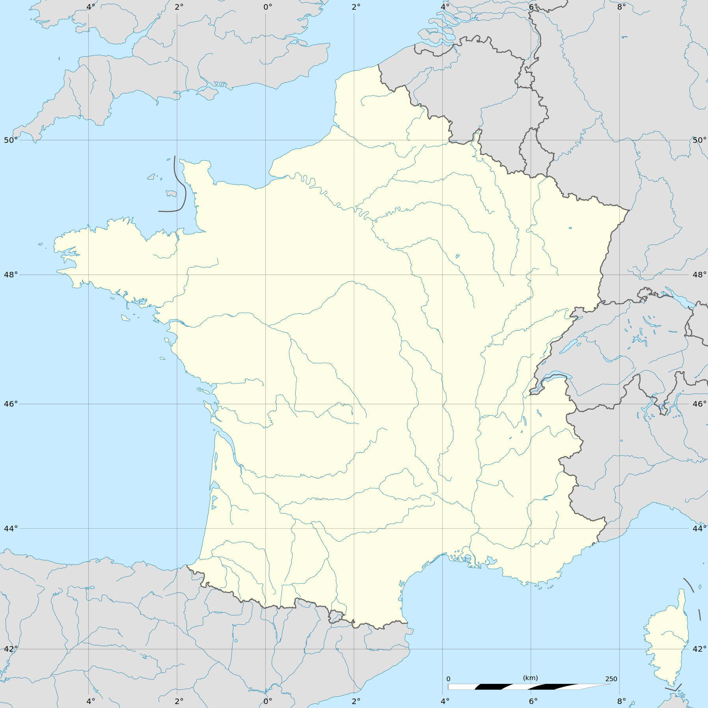

Défi du jour
Les mêmes villes pour tous : comparez-vous à vos proches !
ou
Pratique libre
Difficulté :
Nombre de villes :
Partie terminée !
| Dernier score : | - |
| Nombre de parties : | 0 |
| Score total : | 0 |
| Score moyen : | - |
|
Explications concernant le score :
- Plus un score est faible, meilleur il est
- Le score de chaque essai est égal à :
distance × coeff-difficulté
- Le coeff-difficulté dépend du type de ville : 4 pour la Capitale, 3 pour une Préfecture de région, 2 pour une Préfecture, 1 pour une Sous-préfecture
- Voici l'échelle d'appréciation d'un score :
[0-50] Impressionnant ! – [51-100] Excellent ! – [101-200] Bien ! –
[201-500] Acceptable – [501-1000] Décevant – [1001+] Nul !